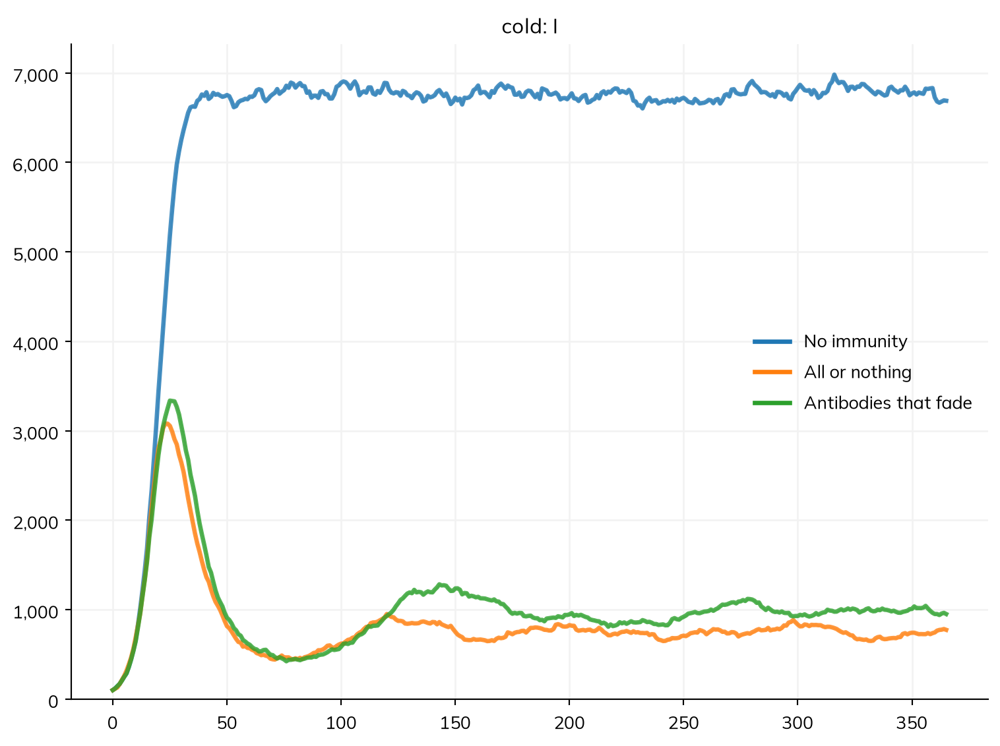
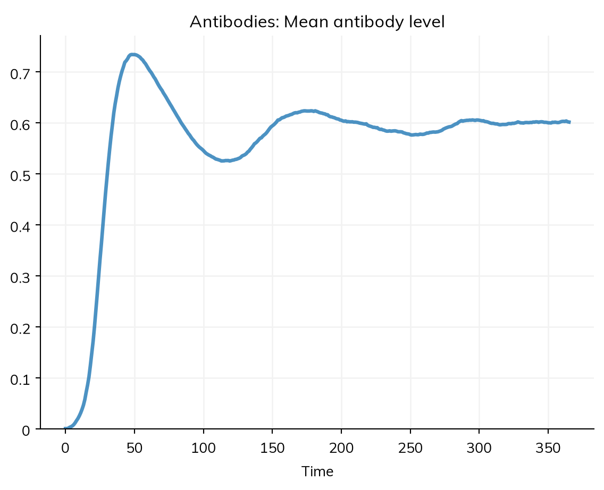

Most of a Starsim model is declared: its states, its transitions and their rates, the interventions given to it, and the results it reports. Some parts of a model are easier to say as code: a quantity that each person carries and that changes continuously (an antibody level, a CD4 count, a viral load), a rule of behavior of your own, or a result worked out in a way of your own. A module written as code is a Python class with a step() method, which Starsim calls once each step. It can read and change the rest of the sim, and it sits in the same sim as declared diseases.
This page covers when to write a module as code, a worked example, the parts of a module, the order in which Starsim calls them, and modules made from a single function. T9 – Custom modules builds one up a step at a time, A5 – Custom modules does the same for modules among agents, and Model execution explains the loop that calls them.
Before writing code
Many things that once needed a module of their own are declared, and a declared part has two advantages: it runs under every solver (as an ODE, as a stochastic compartmental model, or as agents), and describe(), diagram(), and equations() show it. So before writing a module, check whether one of these does the job:
Write a module as code when the model needs something none of these can say. A module that keeps a value for each person, like the one below, works on agents, so a sim with one runs as agents by itself (n_agents= says how many); it works with declared diseases in the same sim. A module that keeps nothing per person, such as an ODE of its own, runs with no agents, and costs the loop only its own methods; A5 – Custom modules works through an example, from declared to compiled code.
An example: immunity that fades gradually
In a declared SIRS model, immunity is all or nothing: people are fully protected in R until they move back to S, and then not protected at all. For many respiratory infections, protection fades gradually as antibodies decline, so each person’s susceptibility depends on how long ago they recovered. That is a per-person quantity that changes continuously, which is what code is for.
(Measles, the example in the tutorials, is a poor fit here: immunity to measles lasts for life. This page uses a generic respiratory infection instead.)
Here is the infection, with no immunity at all: people go back to S when they recover (an SIS model). Its R0 is 0.4 per day × 7 days = 2.8:
import starsim as ssS, I = ss.states('S I')infection = S >> I @0.4*I # β = 0.4 per dayrecovery = I >> S @ ss.days(7) # Infectious for 7 days on averagecold = ss.Disease(infection, recovery, init_prev=0.01)
Starsim kernels: Rust, OUT OF DATE (built before its source last changed, so results may be wrong): run "./build" in starsim/solvers/rust/
The module holds each person’s antibody level. It is 1 just after recovery and halves every half_life:
class Antibodies(ss.Module):""" Each person's antibody level: 1 on recovery, then halving every half_life """def__init__(self, half_life=ss.days(60), **kwargs):super().__init__()self.define_pars( half_life = half_life, )self.update_pars(**kwargs)self.define_states( ss.FloatArr('level', default=0.0, label='Antibody level'), )returndef init_results(self):super().init_results()self.define_results( ss.Result('mean_level', label='Mean antibody level'), )returndef step(self): decay =0.5**(self.t.dt/self.pars.half_life) # The share left after one stepself.level[:] =self.level*decay recovered =self.sim.diseases.cold.recovery.uids # Those who recovered in the last stepself.level[recovered] =1.0returndef update_results(self):super().update_results()self.results.mean_level[self.ti] =self.level.mean()return
The module keeps the level, and a modifier says what it does: it multiplies each person’s susceptibility to the infection by what the antibodies leave of it. A modifier never overwrites the quantity it changes, so the disease’s own rel_sus is kept, and describe() lists the modifier as part of the model:
def susceptibility(sim):""" Each person's susceptibility: 1 minus their antibody level """return1- sim.custom.antibodies.levelprotection = ss.modify(cold.rel_sus, multiply=susceptibility)
To compare, run the infection with no immunity, with all-or-nothing immunity that lasts 60 days on average (a declared SIRS), and with antibodies that halve every 60 days:
S, I, R = ss.states('S I R')sirs = ss.Disease( infection = S >> I @0.4*I, recovery = I >> R @ ss.days(7), waning = R >> S @ ss.days(60), # Fully immune, then fully susceptible init_prev =0.01, name ='cold',)pars =dict(n_agents=10_000, stop=ss.days(365))sims = {'No immunity': ss.Sim(cold, **pars),'All or nothing': ss.Sim(sirs, **pars),'Antibodies that fade': ss.Sim(cold, Antibodies(), connectors=protection, **pars),}msim = ss.parallel(sims)msim.plot('cold_I')
MultiSim: 3 runs of 3 scenarios (No immunity, All or nothing, Antibodies that fade)
Done in 0.93 s

With no immunity, the infection settles at once at an endemic level. With either kind of immunity, the first wave leaves many people protected, so the number infectious falls and then rises again as protection is lost. With antibodies that fade, people regain some susceptibility soon after recovering, instead of none at all until they lose their protection entirely, so the later waves are larger and the infection settles at a higher level.
ss.parallel() runs the sims in place, so each one has its results. The module’s result is among them, under the module’s name:
sims['Antibodies that fade'].results.antibodies.mean_level.plot()

Choosing a base class
A module subclasses one of Starsim’s module types, so that it runs at the right point in each step and ends up in the right place in the sim:
Base class
Use for
Given to the sim as
ss.Module
Anything that doesn’t fit the others, like the antibodies above
Links between modules, such as interactions between diseases
connectors=
The sim keeps each kind in its own list, e.g. sim.custom.antibodies and sim.interventions[0]. A module is named after its class in lower case (antibodies), unless it is given name=.
Parameters: define_pars() and update_pars()
In __init__(), call super().__init__() first, with no arguments; then give the parameters and their defaults with define_pars(); then apply the values the user gave with update_pars():
update_pars() raises an error for a parameter that define_pars() didn’t give, which catches misspelled names. The parameters are in self.pars. Give rates and durations as Starsim’s time parameters (e.g. ss.days(60), ss.peryear(0.1)), so that they mean the same whatever the step of the sim: self.t.dt/self.pars.half_life above is a number of half-lives per step, whether the step is a day or a week.
States: define_states()
A state of a module is an array with one value for each agent. Give the module’s states with define_states(), as ss.FloatArr (numbers), ss.BoolState (true or false), or ss.IntArr (whole numbers). (ss.State is different: it is a state of a declared disease.)
Each state becomes an attribute of the module (self.level) and is added to the people (sim.people.antibodies.level). States grow as agents are born, and a dead agent’s values are kept but left out of sums and means. Keep every value that belongs to a person in a state, never in a plain NumPy array of your own, which wouldn’t grow with the population. Each ss.BoolState also gives a result of the same name, the number of people for whom it is true. A state can also have several columns, e.g. immunity to each of several strains: see People. To read and write states, see Array indexing.
A property of each person that several modules read, rather than a state of one module (e.g. a social determinant of health that two conditions depend on), is added to the people themselves, from init_pre(), with sim.people.add_state(ss.BoolArr('housing', default=ss.bernoulli(0.2))). Adding one that is there already returns it, so each module that reads it can add it. A declared rate reads it as ss.ppl.housing, or as ss.ppl.get('housing', 0) to have a value when no module adds it.
Code reads the same names a declaration does: a condition or an event’s memory of a running sim, indexed by UID, gives its values, e.g. preg.since_birth[uids] (the time since each woman’s last live birth) or (hiv.I & preg.P)[uids], and .values gives them for everyone alive. A declared transition’s current rate for some agents, with its modifiers, is dis.death.hazard(uids).
Aliases
define_aliases() gives a name that stands for something else: the name of another state, or a function of the module.
self.define_aliases(infectious='infected') # Another name for a stateself.define_aliases(asymptomatic=lambdaself: self.infected &~self.symptomatic) # Worked out from other states
Keyword arguments to define_states() are passed on to define_aliases(), so a module can give its states and aliases together. An alias is used only when the module has no attribute of that name, so a base class can use one as a default that a subclass replaces by defining a state of the same name; this is how ss.Infection counts everyone infected as infectious unless a subclass says otherwise (see Diseases). An alias given as a function is worked out each time it is read, can’t be written to, and gives a result (its count). To replace an inherited state or alias, pass overwrite=True to define_states(); to remove one, name it in reset=.
Results: define_results()
To report a result of your own, override init_results() and give it with define_results(). A result has one value for each time point of the sim:
kind= says how the result is summed over time and compared with data: 'flow' for a number of events in each step (e.g. new infections), 'stock' for a quantity at each time point (e.g. the number infected), and 'ratio' for a share or a mean. If it isn’t given, it is guessed from the name (new_... is a flow, n_... a stock) or else the type (an integer is a count, guessed to be a flow; anything else is a ratio). A flow or stock is a count, which is multiplied by the number of people each agent stands for when the population is rescaled; a ratio (a share, a mean, or a level) isn’t. scale= overrides this. Fill results in update_results(), at self.ti.
The work: step()
step() is called once each step, and is where the module does its job. Inside it:
self.sim is the whole sim: its people (self.sim.people), diseases (self.sim.diseases.cold), and so on. A plain ss.Module given as modules= is in self.sim.custom (sim.modules is every module of the sim, of every kind).
self.pars are the module’s parameters. A time parameter stays one (self.pars.half_life), as above. A value that varies, in time (ss.timeseries, ss.seasonal) or by level (ss.by(node=[...])), is its value now in arithmetic and NumPy (self.pars.emergence*n, np.exp(-self.pars.k), float(self.pars.k)): a number in the sim’s unit, or one for each level. If its values are typed, its value now is typed too, so self.pars.rate.to_prob() works whether rate is ss.peryear(0.1) or ss.timeseries({2000: ss.peryear(0.1), 2010: ss.peryear(0.2)}). So is a parameter of a declared disease, with what modifies it applied (acts*(1 - hiv.pars.eff_condom)).
self.t.dt is the length of a step, self.now is the date or time the step starts from, and self.ti is the index of the time point at the step’s end, where what happens during the step is recorded.
A transition of a declared disease says who went through it: disease.recovery.uids is the agents who recovered in the last step. disease.recovery.ever, .count, and .since say whether, how often, and how long ago each person did; to save memory, a disease keeps this history only for the transitions something in the model reads, so to read one after the run (e.g. sir.infection.count.values), set ss.options.keep_times = True before the sim is built.
To move people between the states of a declared disease, use ss.move(): ss.move(sir.I, sir.R, p=0.5) cures half of those infectious, ss.move(sir.S, sir.I, n=5) makes five susceptible people infectious, ss.move(sir.S, sir.R, p=0.8, where=ss.ppl.age < 5) protects 80% of the susceptible children under 5 (a condition on a group, as in where= elsewhere), and sir.move(uids, sir.R) moves particular agents from wherever they are (as agents only; the arguments can come in any order, with the source before the destination, so ss.move(sir, uids, 'R') is the same). It runs the same under every solver, and since people are moved rather than made or lost, every disease keeps the same people; the number in a state of people (sir.I.n) is read, not set. A count that is not people (mosquitoes, ss.State(people=False)) can also be set (W.n = 0) or moved from and to outside the model (ss.move(ss.null, mosq.Sv, n=1000)).
A module written as code that is not a disease runs before the diseases in each step, so what it does (protecting someone, say) applies to the transmission in the same step. Model execution lists the full order.
Exits and arrivals within a step
As agents, a module written as code takes each step whole, as Starsim’s own solvers do, and two habits keep its results from depending on the length of the step (see Solvers). Draw competing exits from a state together: if a mosquito can die or become infectious, draw one exit with the total rate and then which one it was (in proportion to the rates), rather than first the deaths and then the progression of the survivors, which counts the second against a smaller group. And let those who arrive in a state during a step face only the rest of the step: a mosquito that emerges or is infected mid-step should have, on average, half a step’s chance of leaving it, not a whole one. Both biases are of the order of the rate times the step, so they matter when rates are a sizable fraction of a step; sim.check_dt() shows them.
For anything random, give the module a distribution in __init__() (e.g. self.p_isolate = ss.bernoulli(p=0.5)) and draw from it in step() (self.p_isolate.filter(uids)), rather than calling NumPy’s random numbers. Each distribution then has its own stream of random numbers, so the module’s draws don’t change when the rest of the model does, and comparisons between scenarios stay free of noise from the random numbers: see Random numbers.
When each method is called
When a sim is built and run, each module goes through these stages:
__init__(): the module is made; its parameters and states are given.
init_pre(sim): called once when the sim is built. It links the module to the sim and the people, sets up its time steps, and calls init_results(). Override it rarely, and call super().init_pre(sim) if you do.
init_post(): called once the people exist and their states have their initial values; for setup that needs them.
step(): called once each step.
update_results(): called each step after every module has stepped, to record the step’s results.
finalize() and finalize_results(): called once at the end of the run, e.g. to work out a result from others.
Always call the base class’s method (super().init_results(), super().update_results(), and so on) when you override one that the base class has.
Modules from functions
For a quick piece of logic, a function of the sim is enough: it becomes the module’s step(), called once each step. A function given as interventions= becomes an ss.Intervention, one given as analyzers= an ss.Analyzer, and one given as custom= an ss.Module, named after the function. A common use is a check while a model is being built, such as that everyone is in one state of a disease at each step:
S, I, R = ss.states('S I R')infection = S >> I @1.9*I # β = 1.9 per dayrecovery = I >> R @ ss.days(8) # Infectious for 8 days on averagemeasles = ss.Disease(infection, recovery, init_prev=0.001)def check_states(sim):""" Check that everyone alive is in exactly one state of measles """ m = sim.diseases.measles in_states = m.S.sum() + m.I.sum() + m.R.sum()assert in_states ==len(sim.people), f'{in_states} people in states, but {len(sim.people)} alive'returnsim = ss.Sim(measles, analyzers=check_states, n_agents=10_000, stop=ss.days(50), verbose=0)sim.run()print(sim.analyzers[0].name)
check_states
A function module is called at every step, so it has to check the time itself if it should act only at some (e.g. if sim.now >= ss.date('2025-03-01'):). Its keyword arguments with defaults are its parameters, passed to it at each call, so one given as ss.par with bounds can be fitted and set by name like any other parameter (def close_schools(sim, start=2025, share=ss.par(0.5, bounds=[0.2, 0.8])):; see Fitting a model). It has no states or results of its own; as soon as it needs them, write a class instead. ss.Intervention.from_func(fn) (and likewise for the other types) makes the module from a function explicitly. For analyzers, see Analyzers.
Pitfalls
Writing code for something that is declared. Check the table at the top of this page first: a declared part runs under every solver and shows in describe().
Forgetting super(). Call super().__init__() with no arguments as the first line of __init__(), and the base class’s method whenever you override init_results(), update_results(), init_post(), and the like.
Keeping per-person values outside a state. A plain array doesn’t grow when agents are born; a state does, and appears in sim.people.to_df().
Keeping a reference to another module. A sim copies the modules it is given when it is built, so reach the rest of the sim through self.sim in step() (e.g. self.sim.diseases.cold), not through an object kept from before.
Comparing self.ti across modules with their own timelines. A module given start=, stop=, or a dt= of its own runs only on its own steps, and its self.ti counts those steps, not the sim’s. To compare times between modules, use dates or durations (self.now), not step indices.
Writing into another module’s arrays at your own ti. Write into another module’s results and time arrays at its index, not yours: disease.results.treated[disease.ti], and disease.ti_recovered[uids] = disease.ti. With a yearly sim and a monthly disease, self.ti is the wrong row.
Using NumPy’s random numbers. Draw from Starsim’s distributions instead, as above, so that runs can be repeated and scenarios compared without noise from the random numbers.
Reading rel_sus without its modifiers. A disease written as code that is not transmitted (not an ss.Infection with a beta) and reads its own rel_sus or rel_trans reads them with self.current_value('rel_sus', uids), which applies ss.modify(dis.rel_sus, ...) and products, and says so in its class, allow_modifiers = ('rel_sus',); otherwise a modifier of them is refused, since nothing would apply it.
Reading a parameter that differs between people.ss.modify(dis.pars.rate, ...) works on a disease written as code, and self.pars.rate is the modified value while it applies. That is one value, so a modifier with where= needs self.current_value('rate', uids) and allow_modifiers = ('rate',); otherwise it is refused.
Several causes of death in one step. If several modules request the death of the same person in a step (sim.people.request_death(uids, cause=self)), one cause is chosen at random; give each claim its hazard (hazard=) to choose in proportion to them.
Writing to .raw. Write to states by UID (self.level[uids] = 1); see Array indexing.
Further reading
Mesa: agents and their step methods in a general-purpose agent-based modeling framework in Python
LASER: fast spatial agent-based disease models, with per-agent properties updated in compiled code
NetLogo: a classic environment for agent-based models, with many example models
Covasim: Starsim’s predecessor, whose custom interventions and analyzers work much as modules do here